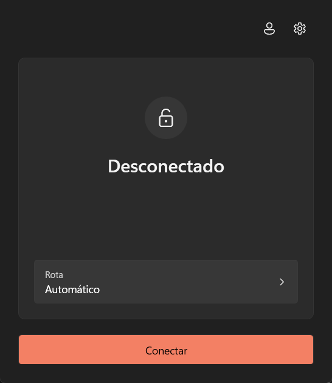
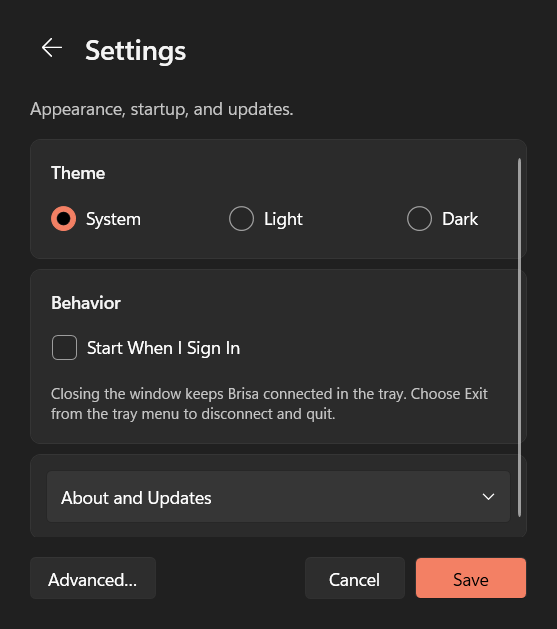

Volte a compartilhar tela no Discord.
No Brasil, o Go Live, a câmera e o compartilhamento de tela do Discord não funcionam. O Brisa abre um túnel WireGuard até um servidor fora do Brasil e manda só o Discord por ele. O resto do PC segue na conexão normal.
Como funciona
- Clicar em Conectar fecha o Discord, sobe o túnel só para ele e abre o Discord de novo.
- Clicar em Desconectar fecha o Discord, derruba o túnel e abre o Discord de novo pela rota normal.
- Nada mais do PC entra no túnel, nem o navegador nem os jogos.
Em chamada? Saia dela antes: conectar fecha o Discord.

O que você precisa
- Windows
- x64, feito para o Windows 11.
- Administrador
- O Windows pede permissão de administrador para conectar e desconectar. Só abrir o app não pede.
- Conta
- Entre com a sua conta Proton (o túnel termina num servidor da Proton) ou importe um
.confdo WireGuard em Configurações, Avançado. - WireSock SDK
-
Obrigatório. O Brisa não conecta sem ele.
Versão 3.4.8.1, instalador oficial x64.
Baixar WireSock SDK 3.4.8.1Não é o WireSock Secure Connect, que é outro produto.

Instalar
- Baixe e rode o
Brisa-win-Setup.exe. - Instale o SDK da WireSock 3.4.8.1. O Brisa não conecta sem ele. Na primeira conexão, se ainda não estiver instalado, ele baixa e abre o instalador oficial.
- Abra o Brisa pelo menu Iniciar, entre com a sua conta Proton ou importe o seu
.confe clique em Conectar.
O instalador ainda não tem assinatura digital, então o SmartScreen pode avisar sobre editor desconhecido. Se o arquivo veio das releases do repositório, clique em Mais informações e depois em Executar assim mesmo.
Também dá para usar a versão portátil em ZIP ou o instalador por PowerShell, que confere o hash antes de rodar.